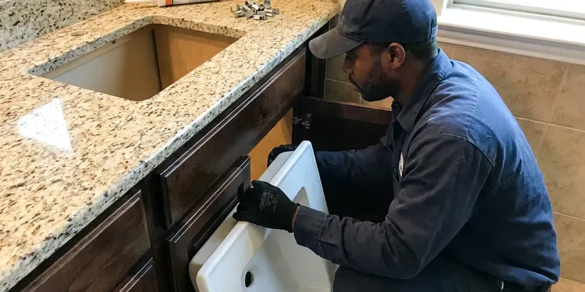

Toilet Replacement in Fort Mill, SC
Upgrade your bathroom with a new, water-efficient toilet. KBN Plumbing offers expert toilet replacement across Fort Mill, SC.
- Fast, Local Service
- Prompt Service
- Workmanship Guarantee
- Experienced Plumbers

Trade Your Old Toilet for a Better One in Fort Mill, SC.
Contact KBN Plumbing today for expert advice and professional installation of your new toilet.
Professional Toilet Replacement Services in Fort Mill, SC
KBN Plumbing specializes in professional toilet replacement, offering a wide range of options to fit your home's style and your budget. Whether your existing toilet is constantly running, cracked, or simply outdated, we provide a clean, efficient removal and installation.
Our expertise includes:
- Removal and disposal of old toilets and tanks
- ADA-Compliant Toilet Installations
- Code-compliant plumbing connections.

Additional Bathroom Plumbing Services in Fort Mill, SC
From toilets to showers, our bathroom plumbing team in Fort Mill, SC handles repairs, installs, and upgrades with tidy, code-compliant work.


Customers
Why Choose KBN Plumbing for Toilet Replacement in Fort Mill, SC?
Choosing KBN Plumbing for your toilet replacement means you are getting a team that values quality and efficiency. We make sure every new toilet is installed correctly to prevent future leaks or issues.
- Quality Fixtures, We recommend and install durable, water-saving toilet models suited to local homes and water pressure.
- Clean Work, Our team keeps a clean work area, protecting your bathroom floors and leaving no mess behind after the replacement.
- Honest Advice, We recommend models by flush performance, not by markup.
Citywide Coverage
From downtown to the suburbs, our team is equipped to handle toilet replacement needs across all neighborhoods in Fort Mill. We aim for prompt service, minimizing inconvenience for our local customers.
Experienced Team
The KBN Plumbing team is made up of seasoned professionals who have completed many toilet replacements. Their expertise means a precise installation, proper sealing, and reliable operation for your new fixture.
Safety-First Approach
KBN Plumbing follows strict safety protocols during toilet replacement, protecting your home and our technicians. We guarantee that your new toilet installation will comply with all relevant plumbing codes in South Carolina, providing peace of mind.
Trusted Certified Fort Mill Plumbing Services Professionals
At KBN Plumbing, we take pride in providing licensed, certified plumbing services throughout Fort Mill, SC. Backed by leading industry credentials, our experienced plumbers combine technical skill with genuine customer care. Whether it is repair, installation, or maintenance, we follow strict safety and quality standards to deliver lasting results you can trust.
Call Us Now PHCC Plumbing Contractor Recognition
PHCC Plumbing Contractor Recognition Better Business Bureau (BBB) Accreditation
Better Business Bureau (BBB) Accreditation Angi Certified Pro
Angi Certified Pro ISO 9001 Quality Management Certification
ISO 9001 Quality Management CertificationProfessional Toilet Replacement Services in Fort Mill, SC
Toilet Flange Repair and Replacement in Fort Mill
Before installing a new toilet, it is essential to make sure the toilet flange is in good condition. A damaged or corroded flange can lead to leaks and instability. Our service for toilet replacement in Fort Mill includes inspecting and, if necessary, repairing or replacing the flange, ensuring a solid foundation and a leak-free seal for your new toilet fixture.

Standard Toilet Replacement in Fort Mill
Many homes in Fort Mill have standard two-piece toilets that eventually need replacing due to age, cracks, or persistent clogs. Our service includes removing your old unit, inspecting the flange, and installing a new standard toilet, with a watertight seal. We work with common brands and models to find a good replacement for your bathroom.
Toilet Brands We Replace in Fort Mill
Our team at KBN Plumbing is experienced with replacing and installing toilets from all major manufacturers in Fort Mill. This includes popular brands like Kohler, American Standard, Toto, Delta, and Gerber. We can help you choose a new toilet from these trusted names that matches your bathroom's style, fits your budget, and provides reliable performance for years to come.
Emergency Toilet Replacement in Fort Mill
A badly cracked or overflowing toilet can be an emergency, especially if it's causing water damage. KBN Plumbing offers emergency toilet replacement services for urgent situations in Fort Mill. We can quickly diagnose the problem and, if replacement is necessary, speed up the process to prevent further damage and restore your bathroom's functionality as soon as possible.
Toilet Replacement Cost Comparison in Fort Mill, SC
If your toilet needs repairs more than once or twice a year, replacement is often cheaper over time. A basic replacement with a reliable toilet typically costs less than a few service calls. Newer toilets also cut water use, which lowers your bill month after month. We lay out repair and replacement costs side by side so you can decide.
Wall-Mounted Toilet Replacement in Fort Mill
For modern bathrooms or those seeking to maximize space, wall-mounted toilets offer a sleek design. Replacing these units requires specific knowledge of in-wall carrier systems. Our team in Fort Mill has the expertise to carefully remove and install wall-mounted toilets, ensuring proper support, drainage, and water supply connections, maintaining the look and function of your bathroom.
Specific Toilet Brand Replacements in Fort Mill, SC
Whether you prefer American Standard, Kohler, Toto, or another trusted brand, our plumbers are experienced with installing a wide range of toilet manufacturers. We can advise you on the best options for durability, water efficiency, and style that fit your budget and the specific plumbing requirements of your home in Fort Mill, SC. We make sure of compatibility with existing plumbing lines.

High-Efficiency Toilet Installation in Fort Mill, SC
Many homeowners are looking for ways to conserve water, and installing a high-efficiency toilet (HET) is an smart choice. We specialize in replacing older, water-guzzling toilets with new HETs that use 1.28 gallons per flush or less. This upgrade can lead to real savings on your water bill over time, no matter where you live.
Toilet Replacement Near Me in Fort Mill, SC
For dependable toilet replacement near me in Fort Mill, SC, look no further than KBN Plumbing. Our local team is located to provide prompt service to all residential and commercial properties. Even with softer supply water in Fort Mill, a yearly water heater flush still helps clear the sediment that settles in the bottom of the tank.
When you need a new toilet, you want a trusted local company. KBN Plumbing provides complete toilet replacement services across Fort Mill, making us the convenient choice for your home or business. We're dedicated to serving our community with integrity and skill.
KBN Plumbing at a Glance
- Licensed and insured plumbers serving Fort Mill, SC
- 24/7 emergency service with same-day scheduling
- Upfront, flat-rate pricing before work begins
- 4.8-star rated by 596+ South Carolina customers
Fort Mill Map
Fort Mill Information
- Population
- 33,626
- Area codes
- Local
- Service area
- Fort Mill and communities within 40 miles
- Nearby
- Rock Hill, Spartanburg, Columbia, Greer
Replacing an old toilet in Fort Mill, SC with a WaterSense model is one of the simplest ways to cut household water use and reduce your monthly bill.
Expert Services
Trust our professionals for reliable KBN Plumbing solutions in Fort Mill, SC.
Our Specialized Plumbing Services in Fort Mill, SC
At KBN Plumbing, we provide a complete range of plumbing services across Fort Mill, SC. From leak detection to full system installations, our team ensures fast, precise, and affordable service for both residential and commercial properties. Explore our core services below:


How Our Toilet Replacement Service Works in Fort Mill, SC
Replacing a toilet with us takes three simple steps and typically a single visit.
Request a Quote
Contact us at (864) 588-3813 to discuss your toilet replacement needs. We'll schedule a convenient time for a technician to assess your situation and provide an honest estimate.
Old Toilet Removal
Our team will carefully shut off the water, disconnect the old toilet, and remove it from your bathroom. We take care to protect your flooring and dispose of the old unit properly.
New Toilet Installation
We will install your new toilet, ensuring a solid seal with a new wax ring, secure bolt connections, and proper water supply line hookup. We test for leaks and verify strong flushing.
Frequently Asked Questions About Toilet Replacement in Fort Mill
The cost for toilet replacement in Fort Mill, SC can range from about $350 to $800, including the new toilet unit and labor. Factors like the type of toilet (standard, high-efficiency, comfort height), any necessary plumbing modifications, and the complexity of the old toilet's removal can influence the final price. We provide upfront estimates.
The rough-in measurement refers to the distance from the finished wall behind the toilet to the center of the drainpipe (the bolts that secure the toilet). Standard rough-ins are usually 12 inches, but 10-inch and 14-inch options exist. Knowing your rough-in is crucial to make sure your new toilet fits correctly in the existing space.
Most standard toilet replacements can be completed by a professional plumber in about 2 to 4 hours. This includes the removal of the old unit, preparation of the flange, installation of the new toilet, and testing for leaks. More complex installations may take a bit longer.
Older toilets can use 3.5 to 7 gallons per flush, while WaterSense toilets use 1.28 gallons or less. For a typical household, that can mean thousands of gallons saved each year.
Signs of failing internal toilet parts include a toilet that runs constantly, a weak or incomplete flush, a handle that needs jiggling, or visible wear and tear on components like the flapper, fill valve, or flush valve. While some parts can be replaced individually, an older toilet with multiple failing components might benefit more from a full replacement.
Key signs include persistent leaks that cannot be sealed, a cracked bowl or tank, frequent clogging despite repairs, or an old toilet that uses excessive water. If your toilet is constantly running or has visible damage, replacement is often the more cost-effective long-term solution.
We install TOTO, Kohler, American Standard, Gerber, Mansfield and other quality brands. We can also install a toilet you have already purchased.
It is possible for handy homeowners, but old toilets are heavy and flange problems are common once the toilet is pulled. A pro replacement prevents cracked porcelain, leaks and damaged floors.
What People Are Saying About Our Plumbing Experts?

Laura S.
I scheduled a water heater replacement, and the team made the process smooth and affordable. The new unit works perfectly, and they cleaned up after completing the job.
Water Heater Replacement · Greer, SC
Patricia H.
We had a slab leak that two other companies could not find. KBN Plumbing located it in under an hour, explained our options, and the price matched the quote to the dollar.
Slab Leak Repair · Rock Hill, SC
Mark T.
When our office needed drain cleaning, KBN Plumbing provided quick, reliable service. The plumber arrived on time and made sure every drain flowed perfectly before leaving. Very satisfied.
Drain Cleaning · Fort Mill, SC
Daniel K.
A pipe burst at 11 pm and they actually answered. The plumber showed up within the hour, shut everything down, and had us back to normal the next morning. Could not ask for more.
Emergency Plumbing · Greenville, SC
James P.
Our commercial plumbing system had a leak under the sink, and KBN Plumbing handled it professionally. The plumbers arrived quickly and restored everything without disruption to our customers.
Commercial Plumbing · Greer, SCSofia M.
Two new toilets installed in one visit, no mess left behind, and the tech even adjusted a faucet he noticed was dripping. Fair pricing and really friendly.
Toilet Installation · Greer, SC